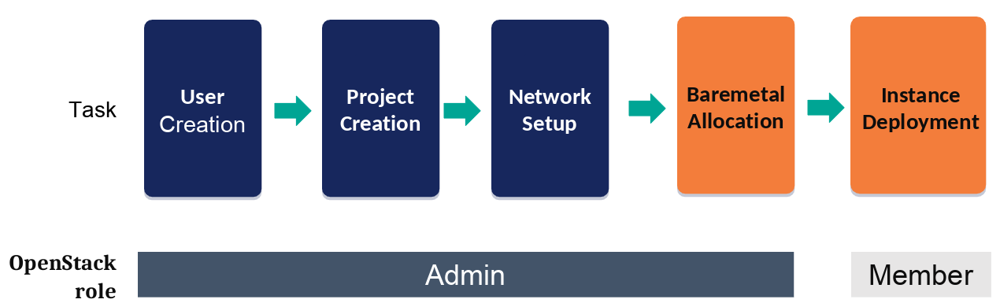
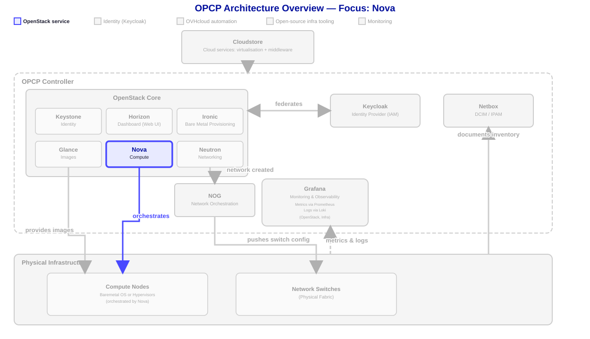

Compute

- In the previous lesson, we created the networking infrastructure for the servers to communicate.
- We will now deploy a compute server with the Nova ervice.

1. Move a Node into Your Project
Before you can deploy an instance, an admin needs to assign a baremetal node to the project you created in the User Management lesson. Nova can only schedule instances onto nodes that belong to your project.
You must be administrator to do the next
List the available nodes and note the <node-id> you want to use:
openstack baremetal node list
Then transfer ownership of that node to your project (${OS_PROJECT_ID} was set in the previous lesson):
openstack baremetal node set <node-id> --owner ${OS_PROJECT_ID}Verify the node now belongs to your project:
openstack baremetal node show <node-id> -f value -c owner2. SSH Key Pair — Generate and Register
To connect to your instance via SSH, you need a key pair. The public key is injected into the instance at boot time, and you use the corresponding private key to authenticate.
Generate a key pair locally
# Generate an Ed25519 SSH key pair (recommended)
ssh-keygen -t ed25519 -C "${STUDENT_ID}@lab" -f ~/.ssh/${STUDENT_ID}-key -N ""
# This creates two files:
# ~/.ssh/${STUDENT_ID}-key (private key — keep it secret)
# ~/.ssh/${STUDENT_ID}-key.pub (public key — uploaded to OpenStack)You can also use RSA if Ed25519 is not supported:
ssh-keygen -t rsa -b 4096 -C "${STUDENT_ID}@lab" -f ~/.ssh/${STUDENT_ID}-key -N ""Register the public key in OpenStack
# Import your public key into OpenStack
openstack keypair create \
--public-key ~/.ssh/${STUDENT_ID}-key.pub \
${STUDENT_ID}-keypair
# Verify the keypair was registered
openstack keypair show ${STUDENT_ID}-keypair3. Launch an Instance
Use the openstack CLI to launch an instance with a specified
flavor, image, and your SSH key pair. Name it ${STUDENT_ID}-compute-instance.
By default, OpenStack selects a host based on the chosen flavor and scheduler rules, which does not guarantee that the node you just configured will be used.
To ensure your instance will be deployed on this specific node, you can target it using its availability zone:
openstack server create --availability-zone "nova::`<node-id>`"Default images on OPCP Core have no password set, if you want to provide a password so you can log in through the instance's console, use Cloud-init files. Here is an example of basic user/password configuration for Debian 12 in cloud-init.yaml file (MUST start with #cloud-config line):
#cloud-config
users:
- name: debian
lock_passwd: false
plain_text_passwd: 'debian'
sudo: ['ALL=(ALL) NOPASSWD:ALL']
ssh_pwauth: true # Launch a compute instance
openstack server create \
--flavor scale-1 \ # template of instance to use
--image "Debian 12 LVM OPCP" \ # system image to deploy
--network ${STUDENT_ID}-net \ # (IF NO TRUNK) network to attach to (Standard port will be created and attached)
--port ${STUDENT_ID}-trunk-port \ # (IF TRUNK) attach trunk port created before
--availability-zone "nova::`<node-id>`" \ # select specific node, needed when you pre-configured a specific node
--key-name ${STUDENT_ID}-keypair \ # public SSH key to use
--user-data ./cloud-init.yaml \ # Cloud init file
${STUDENT_ID}-compute-instance # Instance name
# Verify the instance is active
openstack server show ${STUDENT_ID}-compute-instance -f value -c statusConnect to the instance via SSH
# Get the instance IP address
IP=$(openstack server show ${STUDENT_ID}-compute-instance -f value -c addresses | grep -oP '[\d.]+')
# Connect using your private key
ssh -i ~/.ssh/${STUDENT_ID}-key ubuntu@$IPIf you configured a multi-NIC node before deploying, you can now bond its interfaces at the OS level for extra bandwidth and redundancy — see the optional LACP Configuration appendix.
If you configured software RAID on this node before deploying, see the optional Software RAID appendix to verify the RAID configuration from the instance.
Summary
- Transfer ownership of a baremetal node to your project with
openstack baremetal node set --ownerbefore deploying. - Generate an SSH key pair with
ssh-keygenand register it withopenstack keypair create. - Use
--key-namewhen creating an instance to inject the public key. - Use
openstack servercommands to launch instances. - Flavors define the CPU, RAM, and disk allocated to an instance.
- Missing flavor or image errors are reported with clear messages by the CLI.
- See the LACP Configuration appendix to bond network interfaces for extra bandwidth and redundancy.
- See the Software RAID appendix to configure and verify software RAID state.